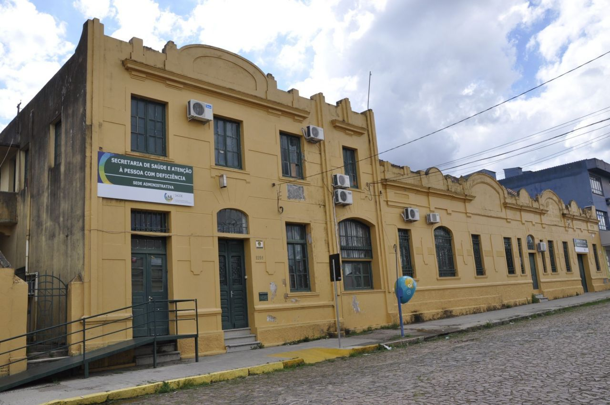
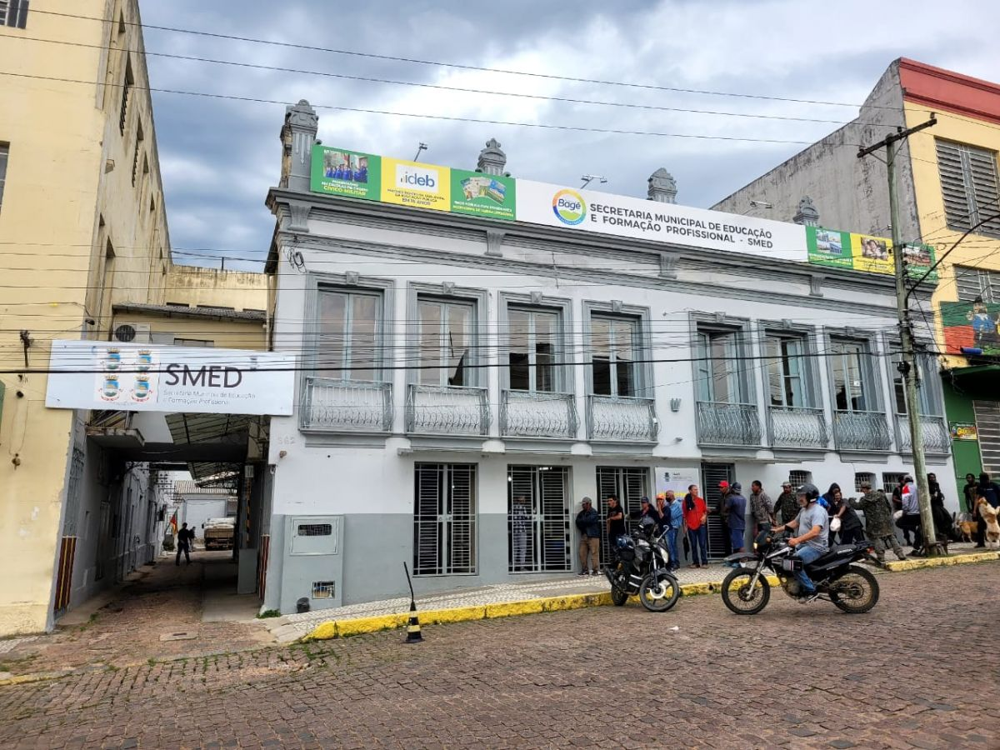

Sobre a Transição de Governo
Bem-vindo ao portal oficial da Transição de Governo da Prefeitura Municipal de Bagé. Este espaço foi criado para garantir uma transição transparente e eficiente, assegurando a continuidade dos serviços públicos e o compromisso com o desenvolvimento de nossa cidade.
Secretarias Municipais


Cronograma da Transição
- Novembro 2024: Início dos trabalhos da equipe de transição
- Dezembro 2024: Análise de relatórios e documentos
- Janeiro 2025: Definição das diretrizes do novo governo
Documentos e Relatórios
Execução Orçamentária 2024
Download PDF →Investimentos por Área
Download PDF →Evolução de Serviços
Download PDF →Entre em Contato
Email: transicao2025@bage.rs.gov.br
Telefone: (53) 3240-5000
Endereço: Av. General Osório, 998 - Centro, Bagé - RS, 96400-100